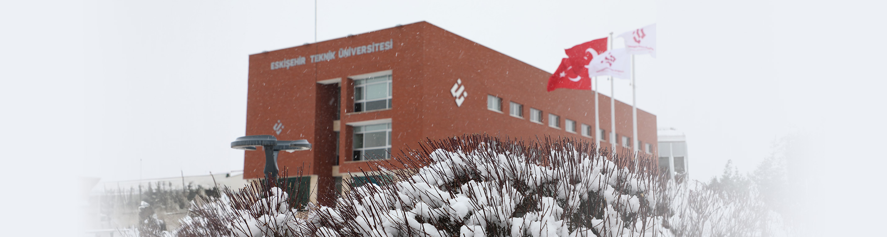

ABOUT OUR UNIVERSITY
Established in 2018, Eskişehir Technical University carries forward a strong legacy of higher education and research. The university hosts over 10,000 students, more than 800 academic staff, and 20 administrative departments.
With a focus on science, technology, and innovation, ESTU aims to create global impact through its research and education programs. The university operates in three campuses with 5 faculties, 3 vocational schools, 1 school, 3 institutes, and 8 research and application centers. It also operates the Hasan Polatkan International Airport, which offers flights on different days of the week via various airlines.